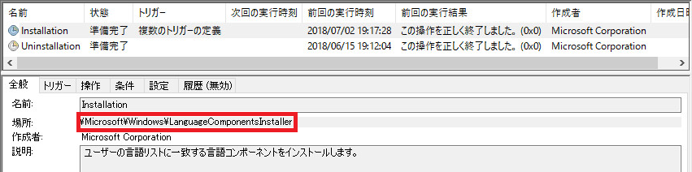
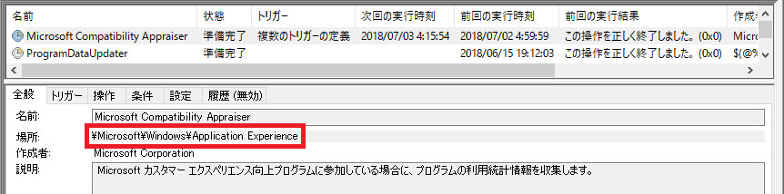

※本記事はマイクロソフト社員によって公開されております。
※この記事は過去に作成され、公開された記事を再編したものです。
みなさま、こんにちは。WSUS サポート チームです。
今回は Windows Server 2016 で以下のような Windows Error Reporting のメッセージが出力される事象について紹介します。
1 | ログの名前: Application |
結論から言ってしまうと、情報レベルで出力される通り、特に実影響がなければ無視していただいても問題ありません。
また、このイベントが出力されたからといって、Windows Update が失敗しているとも限りません。
このイベントが何の処理なのか特定するポイントは、上記の P8: TrustedInstaller FOD 箇所となります。
運用上必要な処理が失敗している場合には、もちろんエラー コードから、個別に対応の検討が必要となります。
しかし、運用上もし不要な処理であれば、処理を停止してしまうことも可能ですので、今回はこのイベントの P8: TrustedInstaller FOD の箇所が、何の処理を示すのか紹介してまいります。
UpdatesOrchestartor / Windows Update の処理
上述の箇所に、UpdateOrchestartor と表示される場合には Windows Update の処理に失敗したことを示します。
もし、そもそも Windows Update が出来ないような環境の場合には、以下ブログにて紹介している方法で Windows Update の自動実行および、このイベントが出力されることを抑止出来ます。
Windows 10 / Windows Server 2016 でも Windows Update の自動更新は止められます
https://jpmem.github.io/blog/wsus/2017-09-08_01/
TrustedInstaller FOD / 言語パックの情報の取得処理
過去の事例より、TrustedInstaller FOD と表示される場合には、LanguageFeaturesOnDemand というユーザーの言語に一致する言語パックの情報をバックグランドで取得するタスクが実行され、この処理が失敗した場合に記録されることが判っております。
このタスクは、以下のパスに存在します。

このタスクは、ユーザーの言語に一致する言語パックの情報をバックグランドで取得するタスクであるため、言語パックなどの追加や変更を行うことがない環境であれば、停止していただいても影響はありません。
タスクを無効化する場合には、以下のコマンドを管理者権限で実行します。
1 | SCHTASKS /Change /TN "Microsoft\Windows\LanguageComponentsInstaller\Installation" /DISABLE |
Device Driver Retrieval Client / ドライバーの更新処理
Device Driver Retrieval Client と表示されている場合には、ドライバーの取得処理です。
特にドライバーの取得や更新をする必要がない場合には、以下のグループ ポリシーを設定することで無効化が可能です。
1 | [コンピューターの構成] - [管理用テンプレート] - [システム] - [デバイスのインストール] - [デバイス ドライバーを検索する場所の順序を指定する] を "有効" |
CompatTelRunner.exe / アプリケーションの互換性に関するテレメトリ (統計情報) の収集する処理
CompatTelRunner.exe はタスク スケジューラーのタスクより定期的に起動して、アプリケーションの互換性に関するテレメトリ (統計情報) の収集を行うプロセスとなります。
CompatTelRunner.exe の動作を止める方法として、以下のパスに存在するタスク Microsoft Compatibility Appraiser と ProgramDataUpdater の無効化をする方法がございます。

また、以下のコマンドを管理者権限で実行いただくことでも上記タスクを無効化することが可能です。
1 | SCHTASKS /Change /TN "\Microsoft\Windows\Application Experience\Microsoft Compatibility Appraiser" /DISABLE |
Windows Defender / Windows Defender による定義ファイルの更新処理
Windows Defender は、その名の通り Windows Defender による定義ファイルの更新処理を示します。
もし、サードパーティ製のアンチウイルス ソフトを利用していたり、Windows Defender の利用の必要がない場合には、以下のグループ ポリシーを設定し、Windows Defender を無効にすることで停止が可能です。
1 | [コンピューターの構成] - [管理用テンプレート] - [Windows コンポーネント] - [Endpoint Protection] - [Endpoint Protection を無効にする] を "有効" |
補足 : 各処理を停止した場合に、本イベントの出力を停止する方法について
上記の各処理を停止しても、Windows Error Reporting のキューにファイルが溜まっていると、過去に発生したイベントがイベント ログ上に出力され続けてしまいます。キューのファイルについては、以下のフォルダに保存されているため、手動で削除していただくことによって、過去に溜まったイベントを一掃し、イベントの出力を停止することが可能です。
イベントが気になる方は合わせて以下のフォルダ配下のファイル削除をご実施ください。
対象フォルダ : C:\ProgramData\Microsoft\Windows\WER\ReportQueue\